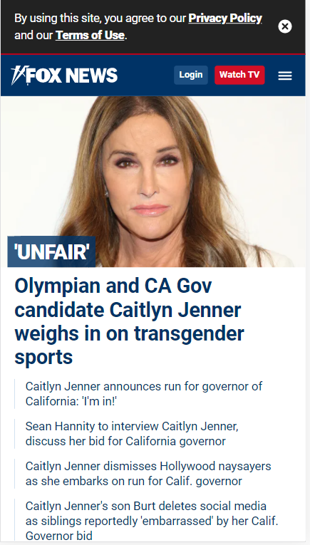
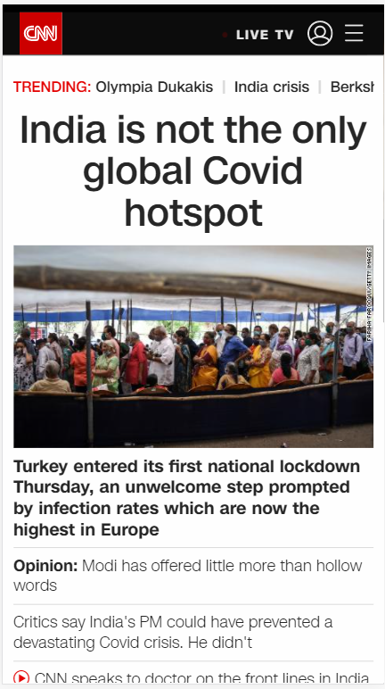
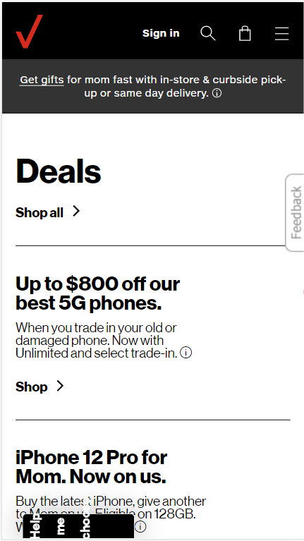

Visual Hierarchy
Fox News
The Fox New website using font size, color text, and large pictures to highlight the main stories. Related stories to the main story follow below the main story in smaller front.
White Space and Clean Design
CNN
The CNN website had a nice clean design with adequate white space when using a moblie device. However, when visiting this site using a desktop or laptop the site is not as clean. It has an overcrowded look and little white space.
Alignment
Verizon
The Verizon website uses left alignment that gives the site a hard left egde that makes their site look clean and fresh.